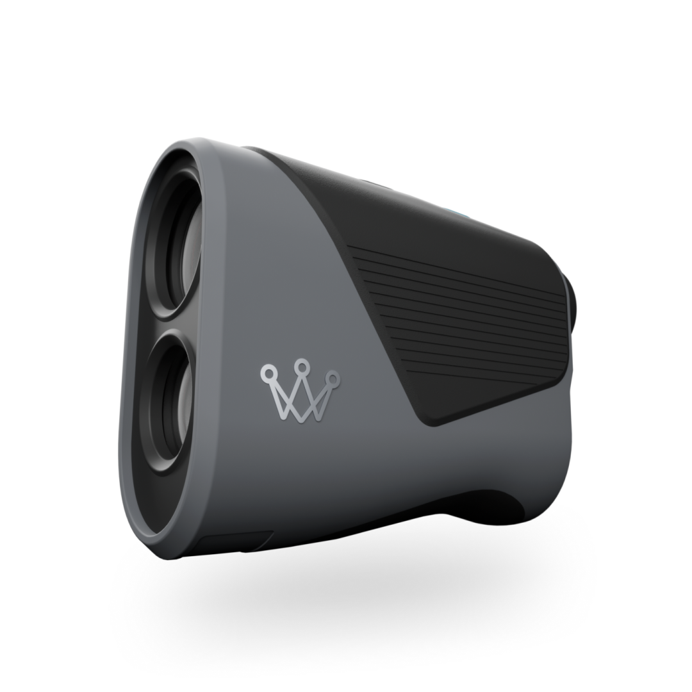
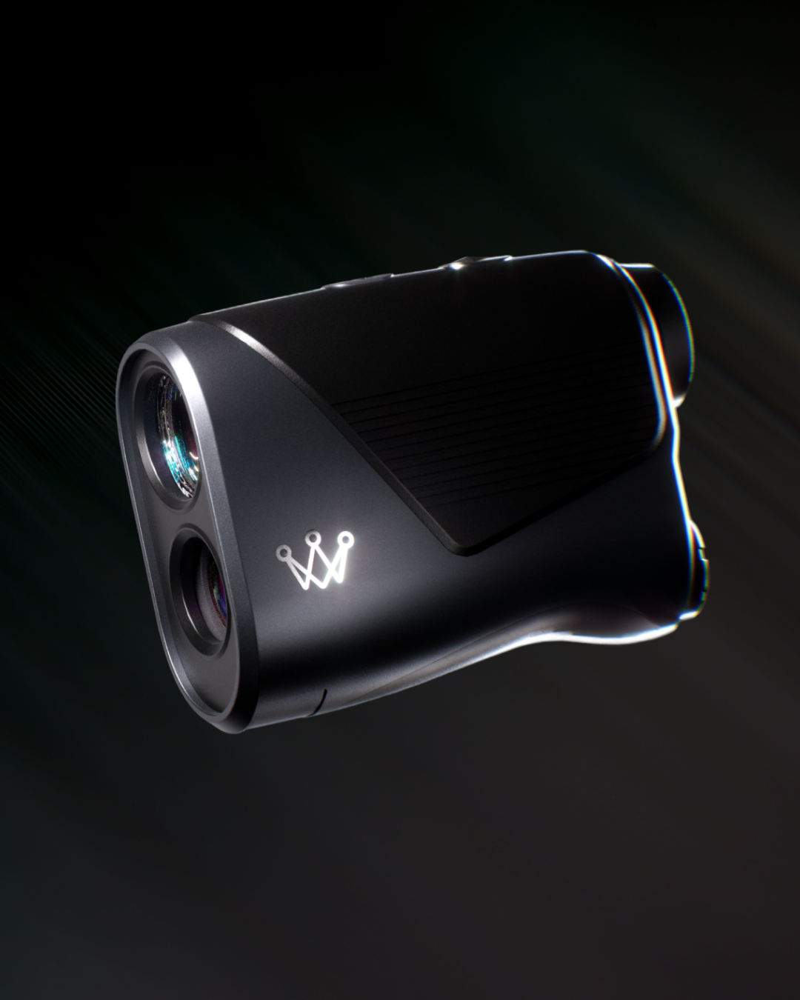
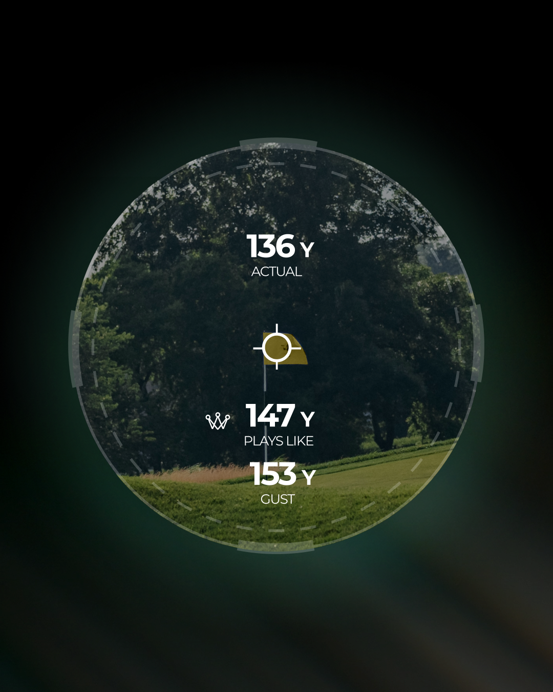
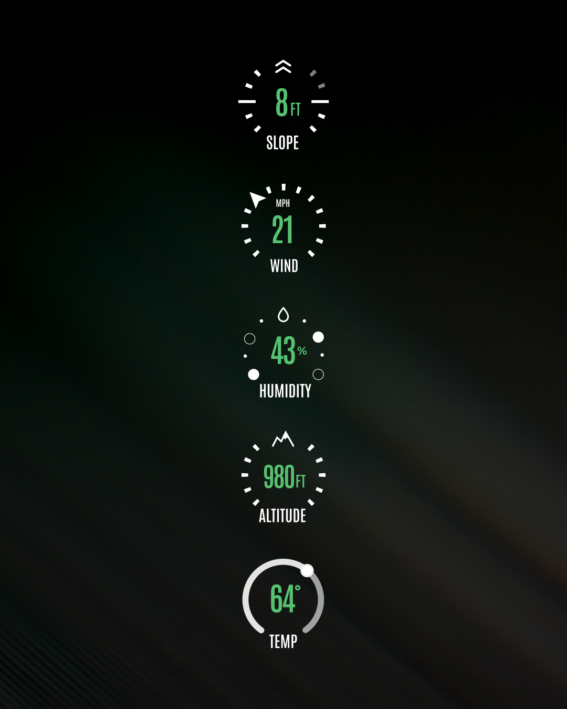
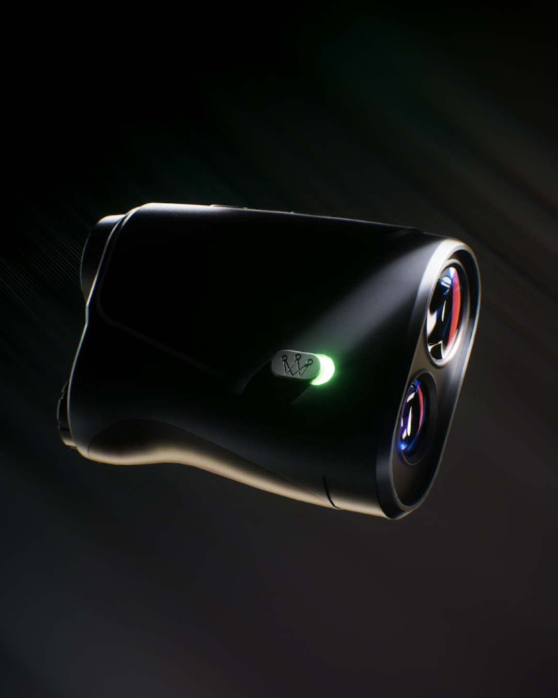
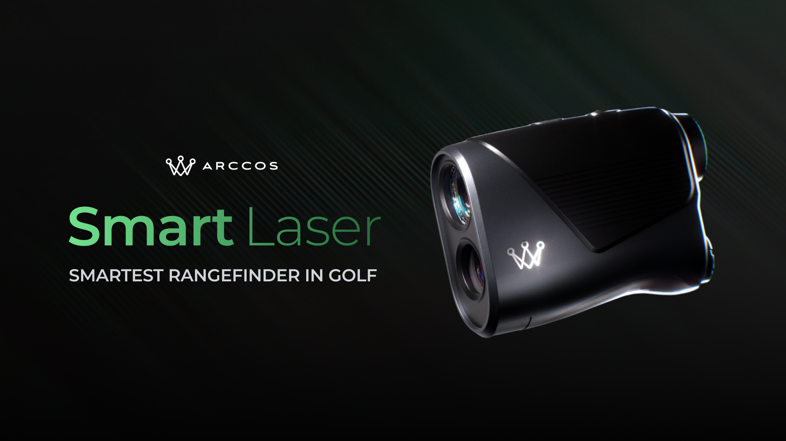
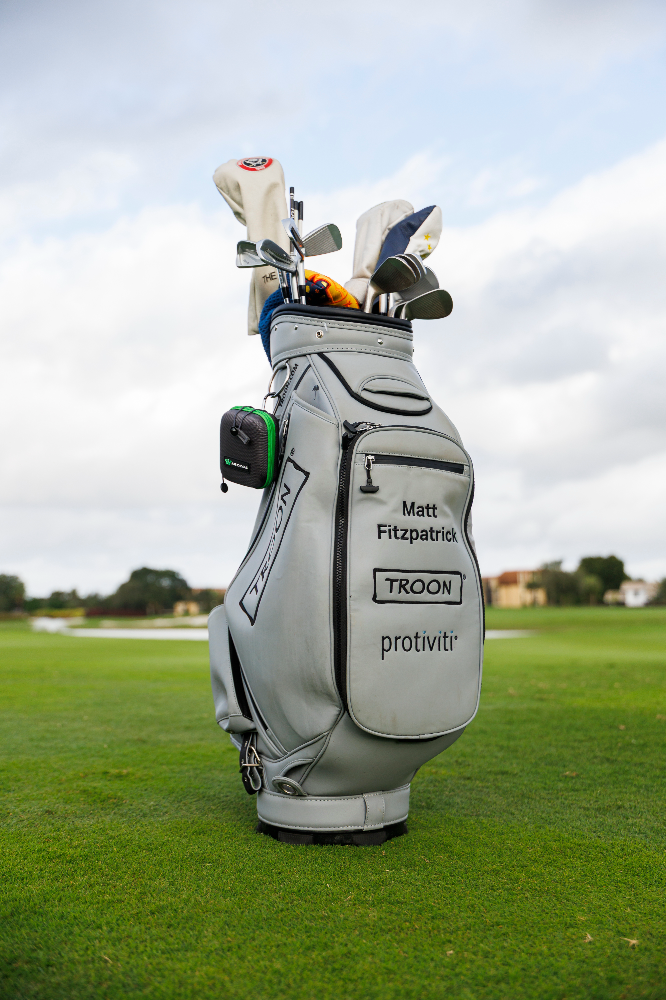
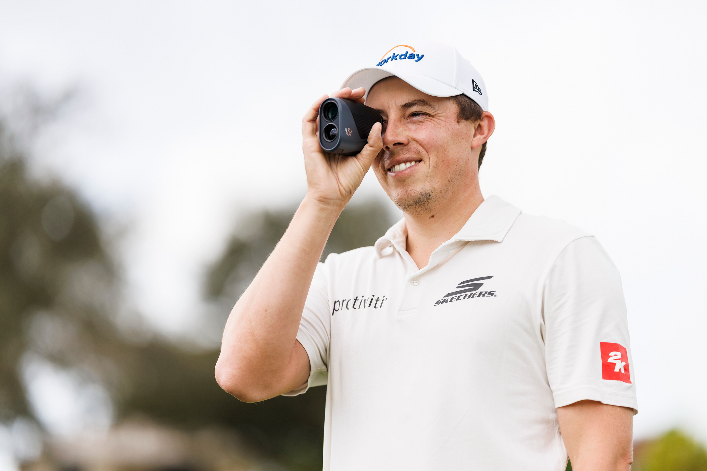

Smart Laser Rangefinder
Insight
The rangefinder market competes on specs. The Smart Laser needed to do something different. Introduce a connected rangefinder that paired precision yardages with real-time AI insights, and convince golfers who had never thought of their rangefinder as smart that they needed one.
Approach
The work had to hold together at every layer, from the object in a golfer's hand to the screen on their phone. Industrial design, packaging, campaign, and motion were all built around one idea: the most accurate number you've ever had. That number was “Plays Like” Distance, a real-time calculation factoring wind, slope, humidity, altitude, and temperature. Not just how far. How it actually plays. Every creative decision was made to help golfers understand why that changes everything.
The result
- 3,700+Pre-orders
- $850K+Pre-order revenue
- 8%Site pre-order conversion
- Week oneSold out at launch








